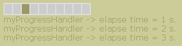

Using Indeterminate Mode
how to animate a progress bar to show unknown length-task activity Table of Contents
IntroductionSometimes you can't immediately determine the length of a long-running task,
or the task might stay stuck at the same state of completion for a long time.
You can show work without measurable progress by putting the progress bar in
indeterminate mode. A progress bar in indeterminate mode displays animation
to indicate that work is occurring. As soon as the progress bar can display
more meaningful information, you should switch it back into its default,
determinate mode.
Using Indeterminate Mode without Progress Monitor |  |
- <?php
- require_once 'HTML/Progress.php';
-
- function myProgressHandler($progressValue, &$bar)
- {
- static $c;
- static $t;
-
- if (!isset($c)) {
- $c = time();
- $t = 0;
- }
-
- // wait a bit ...
- $bar->sleep();
-
- if ($bar->isIndeterminate()) {
- $elapse = time() - $c;
-
- if ($elapse > $t) {
- echo "myProgressHandler -> elapse time = $elapse s.<br/>\n";
- $t++;
- }
- /* rules to determine when switch back
- from indeterminate to determinate mode
- */
- if ($elapse >= 12) {
- $bar->setIndeterminate(false);
- $bar->setValue(0);
- $bar->setString(null);
- $bar->setIncrement(1);
- }
- }
- }
-
- $progress = new HTML_Progress();
- $progress->setAnimSpeed(200);
- $progress->setIncrement(10);
- $progress->setStringPainted(true); // get space for the string
- $progress->setString(""); // but don't paint it
- $progress->setIndeterminate(true); // Progress start in indeterminate mode
- $progress->setProgressHandler('myProgressHandler');
-
- $ui = & $progress->getUI();
- $ui->setProgressAttributes('background-color = #e0e0e0');
- $ui->setStringAttributes(array(
- 'color' => '#996',
- 'background-color' => '#CCCC99'
- ));
- $ui->setCellAttributes('active-color = #996');
- ?>
- <html>
- <head>
- <title>Basic Indeterminate Mode </title>
- <style type="text/css">
- <!--
- body {
- background-color: #CCCC99;
- color: #996;
- font-family: Verdana, Arial;
- }
-
- <?php echo $progress->getStyle(); ?>
- // -->
- </style>
- <script type="text/javascript">
- <!--
- <?php echo $progress->getScript(); ?>
- //-->
- </script>
- </head>
- <body>
-
- <?php
- echo $progress->toHtml();
-
- $progress->run();
- ?>
-
- </body>
- </html>
Lets review this example step by step :
First, there is the user callback defined on lines 4 to 34,
and attached to the progress meter at line 42
with HTML_Progress::setProgressHandler method.
Percent text information is hidden with value "" given to HTML_Progress::setString
method (line 40).
And the determinate mode is activated on line 41.
Lets have a look deeper into user-callback.
This example simulate a wait-process result for 12 seconds (lines 18 and 27).
Each new second, we display the elapse time (lines 20 to 23). When process
will reach 12 seconds (line 27), we will switch back to determinate mode (line 28).
The percent text information will be display again (line 30)
and we will start a new standard cycle, from 0 to 100 percent (lines 29 and 31).
Using Indeterminate Mode with Progress Monitor
 | In example that follow, we will use a progress bar with help of monitoring functions v2,
so you should have HTML_Progress 1.1 or greater installed. |
Usage of indeterminate mode of progress meter with HTML_Progress_Monitor
class is almost the same as in basic example above.
Differences with basic concept resides into QF renders defined on lines
89 to 102, and attached to the monitor at line 103.
And also the progress meter is linked to the monitor on line 59.
| Prev |
Up |
Next |
| Advanced Error Handling |
Getting Started |
Observer pattern |
|
|